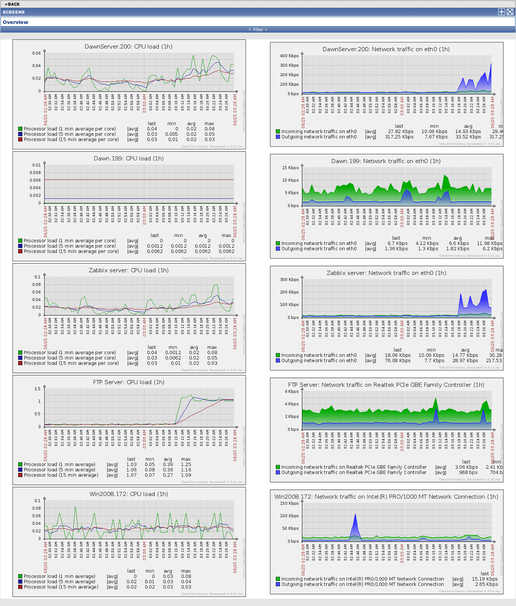

zabbix(音同 zæbix)是一个基于WEB界面的提供分布式系统监视以及网络监视功能的企业级的开源解决方案。
zabbix能监视各种网络参数，保证服务器系统的安全运营；并提供灵活的通知机制以让系统管理员快速定位/解决存在的各种问题。 zabbix由2部分构成，zabbix server与可选组件zabbix agent. zabbix server可以通过SNMP，zabbix agent，ping，端口监视等方法提供对远程服务器/网络状态的监视，数据收集等功能，它可以运行在Linux, Solaris, HP-UX, AIX, Free BSD, Open BSD, OS X等平台上。
zabbix agent需要安装在被监视的目标服务器上，它主要完成对硬件信息或与操作系统有关的内存，CPU等信息的收集。zabbix agent可以运行在Linux,Solaris,HP-UX,AIX,Free BSD,Open BSD, OS X, Tru64/OSF1, Windows NT4.0, Windows (2000/2003/XP/Vista)等系统之上。 zabbix server可以单独监视远程服务器的服务状态；同时也可以与zabbix agent配合，可以轮询zabbix agent主动接收监视数据（agent方式），同时还可被动接收zabbix agent发送的数据（trapping方式）。 另外zabbix server还支持SNMP (v1,v2)，可以与SNMP软件(例如：net-snmp)等配合使用.
